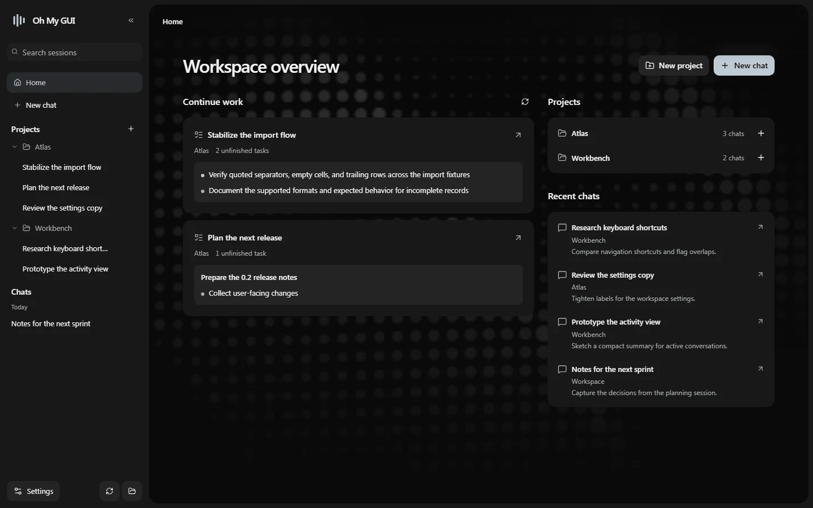
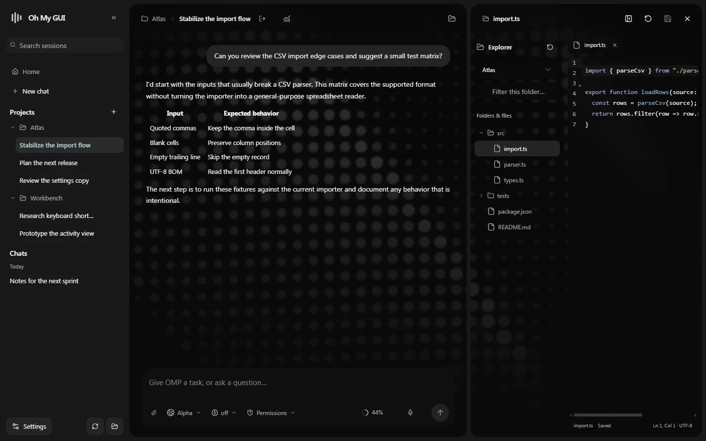
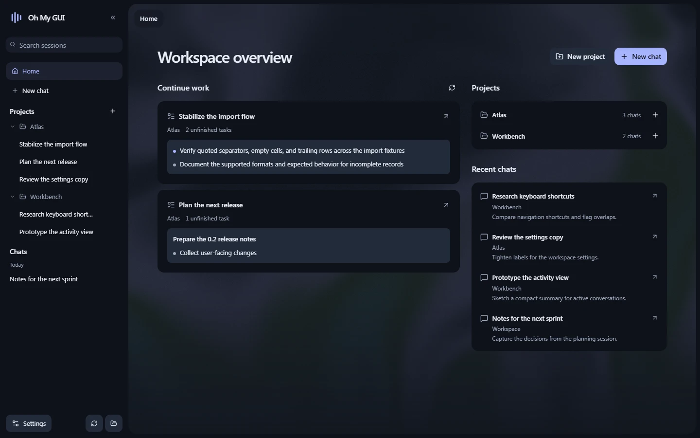
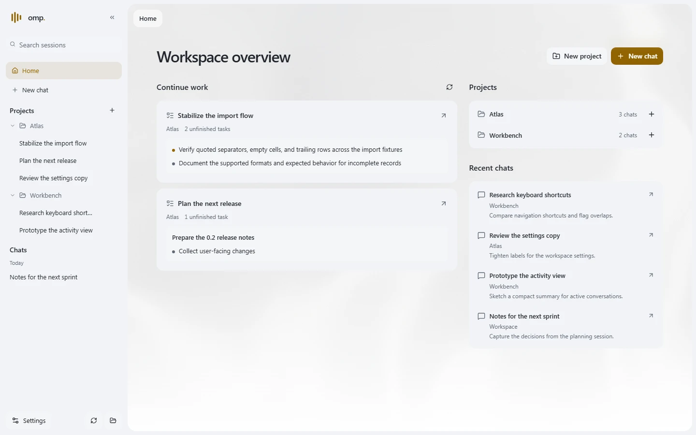

The AI harness you know.Reimagined for desktop.
omp. brings Oh My Pi to the desktop, with project chats, live agent activity, and your files in one window.
Download omp.
A frontend for
Oh My Pi.
omp. connects to your local Oh My Pi runtime. Your providers, models, and tools still run through the CLI setup you already use.
The interface puts your projects, conversations, and agent activity alongside the files you’re working on. Use the desktop app or open the same interface in your browser.
Inside the workspace
Everything starts with your project folder.



A theme for your work.
Carbon
 Ash
Ash Steel
Steel Forest
Forest
Midnight Plum
Plum
PaperThe way you want it.
Change backgrounds, fonts, icons, accents, and glass effects in the app’s Appearance page.
The interactive preview is available in the built site.